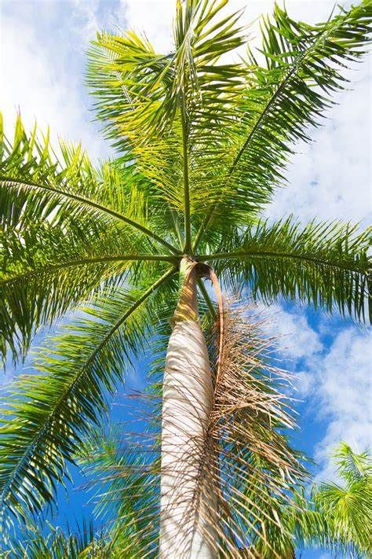

Palms are among the best known and extensively cultivated plant families. There are around 202 currently known genera and over 2,500 different palm tree species in the world, most of which are restricted to tropical, subtropical, and warm temperate climates.
While palms preform best in warm climates, some can tolerate cold temperatures down to 10F.

They also differ in growth rate and heights. You can find palms with single trunk, clump of multiple trunks or vining growth habit.
Their leaves can vary in shape and color. Because of such variations, it’s easier to classify palms by their appearance and botanical features.